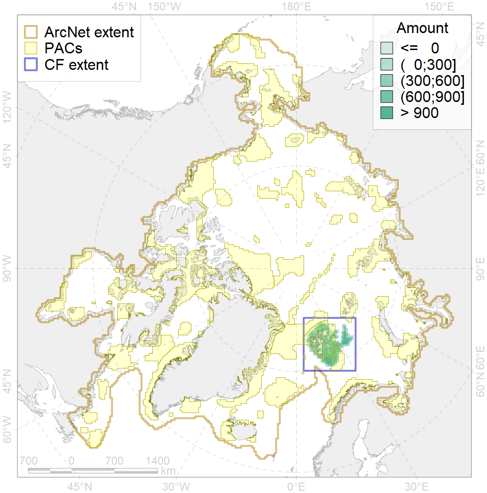
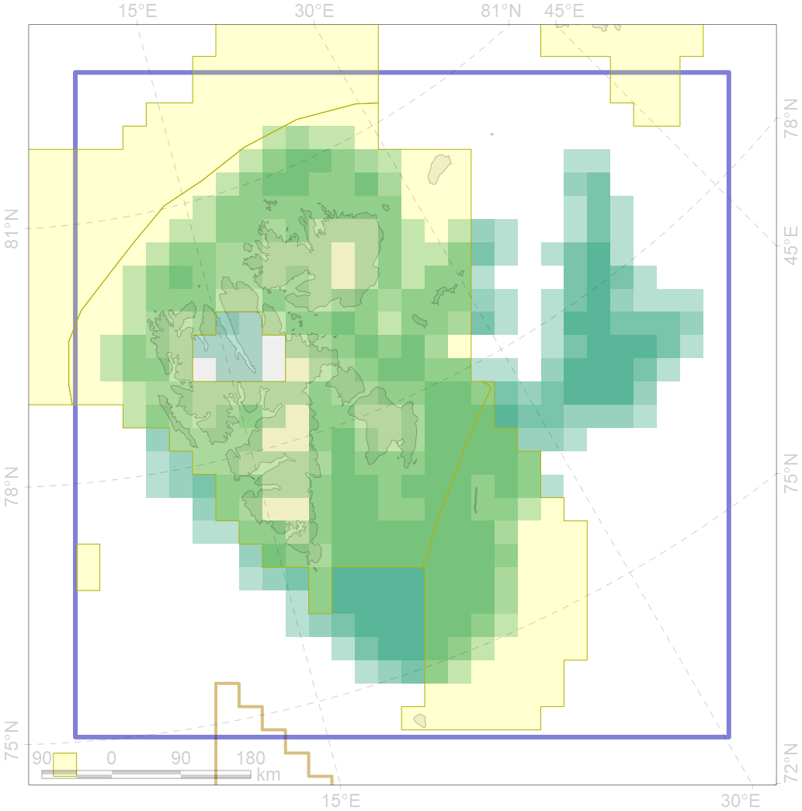

2015

| CF code | 2015 |
| CF name | Bearded seal whelping areas in Spitsbergen region |
| Time Period | 2007-2018 |
| Source(s) | Surrogate data; sea ice conc files by Will Merritt prepared based on https://nsidc.org/data/seaice_index, bathymetry from http://www.naturalearthdata.com/downloads/10m-physical-vectors/ |
| Seasonality | March-June |
| Depth Horizon | 0-200 m |
| Methodology | Habitat preference research and expert input |
| Use Restrictions | Open source |
| Author Name | Irina Trukhanova |
| Notes | |
| Scenario’s Target | 0.18 |
| Target Achievement | 0.708 (Scenario: 393.1%) |
| PAC | Share of the Total Amount within the PAC | Share of the Target Achievement for the ArcNet | PAC’s Contribution to the Target Achievement |
|---|---|---|---|
| 29 | 0.0%0.1% | 0.1%0.5% | 0.0%0.1% |
| 30 | 56.4%58.8% | 305.6%318.1% | 77.7%80.9% |
| 31 | 14.7%17.2% | 77.4%90.4% | 19.7%23.0% |
| inner | 71.1%76.0% | 383.0%409.0% | 97.4%104.0% |
| outer | 28.9% | 10.1% | 2.6% |
| † supplement values are for area consistence whereas principal values are for Accenter compatible gridded stats |